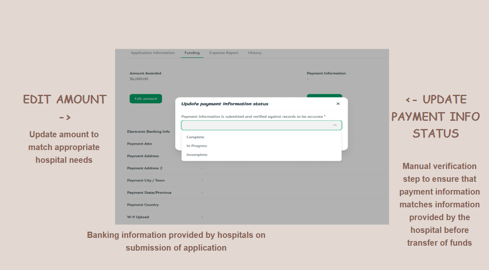
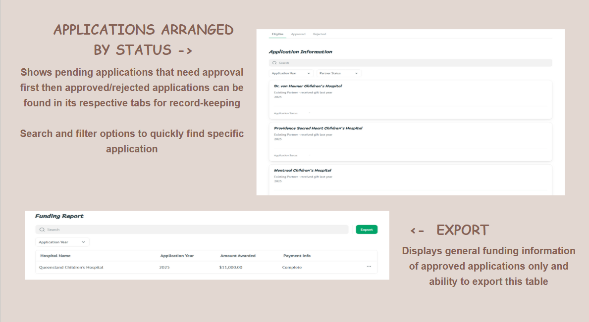
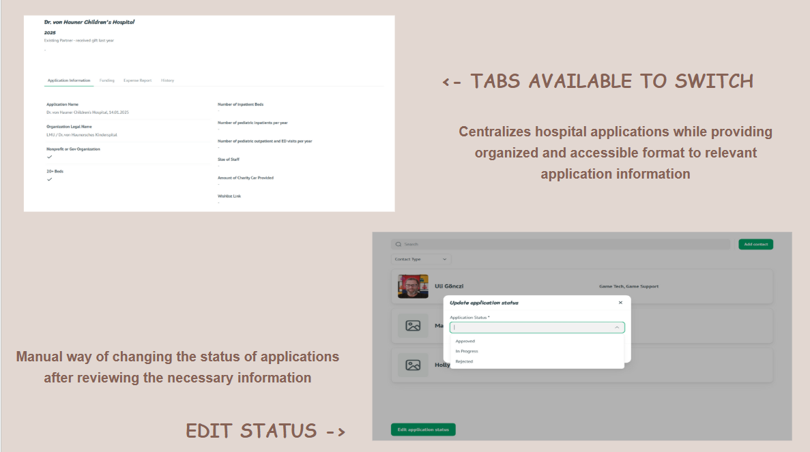

CRM Grant Application Review System
April 2025 – June 2025
Team Lead | Product Manager | UX Designer
- Directed the end-to-end development of a scalable CRM solution for Child’s Play, a global nonprofit supporting pediatric hospitals.
- Led a cross-functional team to replace manual processes with a streamlined Airtable–Softr system, enhancing grant tracking, stakeholder engagement, and data hygiene.
- Focused on intuitive UX, automation, and sustainability to support long-term organizational growth.
The Problem
- Manual grant management processes lead to redundant data submissions and reporting bottlenecks.
- Inefficient communication workflows between hospitals and review teams hinder transparency.
- Small teams managing approximately 200 hospital applications face significant administrative burdens.
Our Goals
- Streamline the grant management process for small teams handling 200+ hospital applications.
- Reduce administrative workload through automation of reminders and compliance checks.
- Improve data accuracy and consistency across all stakeholder touchpoints.
Our Solution
- Developed an integrated Airtable-Softr platform to automate and optimize grant application tracking and review.
- Enabled real-time data sync between Softr hospital profiles and Airtable for consistent data.
- Implemented automated email reminders and profile completeness checks to reduce manual oversight.
Tools Used
- Airtable (Database, CRM Backend)
- Softr (Frontend platform, Workflow Automation)
- Azure DevOps (Sprint tracking, Task Management)
- Figma (UI/UX Prototyping)
- Microsoft Excel (Legacy Data Migration)
Our Impact
By implementing the Grant Application Review System, our team has empowered Child's Play to efficiently manage grant applications for 200+ hospitals, reducing administrative overhead and improving data hygiene. Automation of workflows like profile verification and reporting reminders allows hospitals to focus on their mission, while reviewers benefit from enhanced decision-making tools. This project has sharpened my skills in system design, stakeholder collaboration, and delivering scalable solutions that support nonprofit growth.
Feature Screenshots


